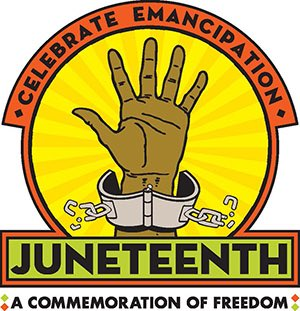
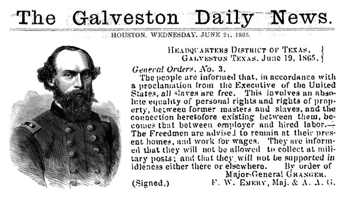
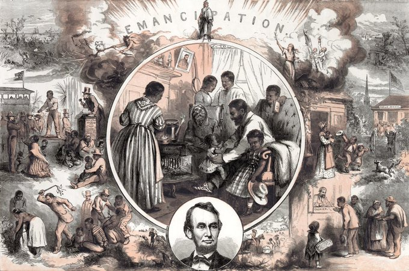
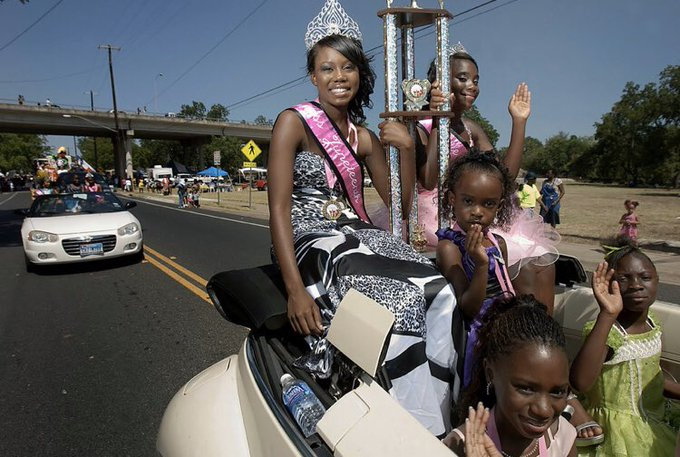
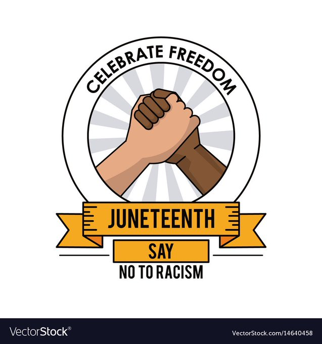

Los Hilos de Monik
Juneteenth
Publicado el 18 de junio de 2020 - 5 tweets - Hilo original en Twitter
1
¿Ya empezaste a ver en tu feed #Juneteenth? Es muy posible que mañana haya muchos posts mencionando esta palabra. ¿Sabes que significa?
"Juneteenth" (contracción de “June 19th”) es una festividad no oficial en los EE.UU., también conocida como Día de la Liberación.
2
El 19 de junio de 1865, dos meses después de la rendición del general confederado Robert E. Lee en Virginia, el general de la Unión Gordon Granger llegó a Galveston, Texas, para informar a los esclavos de que eran libres y que la Guerra Civil había terminado.
3
El anuncio del General Granger puso en vigor la Proclamación de Emancipación, que había sido emitida más de dos años y medio antes, el 1 de enero de 1863, por el Presidente Abraham Lincoln.
Texas fue el último Estado esclavista.
4
En 1980, Texas se convirtió en el primer estado en designar Juneteenth como día festivo. Desde entonces, otros 45 estados y el Distrito de Columbia reconocer oficialmente el día.
Actualmente hay una campaña pidiendo que se convierta en un holiday a nivel federal.
5
Se celebra con misas, fiestas y eventos políticos. Este año se espera que haya grandes demonstraciones, como parte de la campaña #BlackLivesMatter
Así que ya sabes: mañana, cuando veas noticias que mencionan esta palabra tan rara #Juneteenth, sabrás de qué están hablando.
